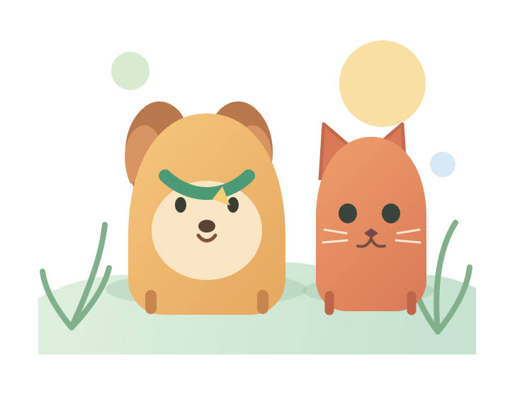

SAMPLE PROFILEA little snapshot
🐕
Momo
Ready for a sniffari
Today’s steps2,480Illustrative
Mood checkTail-waggingJust for fun
Example values · not measured by a device
Meet the SmartPet demo: a playful dashboard for pet profiles, example activity and the moments that make caring feel easier.

Tap a companion to change the sample card. These are playful examples, not live readings.
Ready for a sniffari
See how the pieces fit together today, then help shape what SmartPet becomes next.
Add pet profiles in the dashboard and switch between them. They stay saved in this browser on this device.
Open the demo and make a little space for your favorite companion.